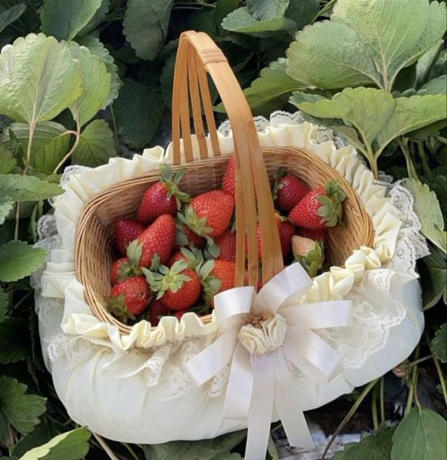

Repostera
TARTA DE FRESA
25/01/2021 - En un cuenco amalgamar con los dedos la harina con la mantequilla blanda para obtener una especie de ‘arena’. Añadir el azúcar y el huevo y amasar hasta obtener una bola homogénea sin trabajarla demasiado. Conservar en la nevera media hora como mínimo. La masa se puede hacer de un día para otro.
Calentar la leche en un cazo grande. En un cueco, batir las yemas con el azúcar y añadir el extracto de vainilla y el almidón de maíz. Mezclar hasta obtener una crema suave. Cuando la leche esté hirviendo, verterla suavemente sobre la mezcla mientras se remueve bien. A continuación, verter todo nuevamente en la cacerola, espesar a fuego lento y remover durante 3 o 4 minutos. Cubrir con un papel film en contacto con la crema o derretir una nuez de mantequilla sobre ella para evitar que se seque. Dejar enfriar y batir la crema rápidamente para homogeneizarla. Montar la nata e incorporarla suavemente a la crema pastelera. Guardar en la nevera.
Estirar la masa, colocarla en el molde, pinchar el fondo con un tenedor, forrar la base con papel para hornear y poner peso encima (Garbanzos o bolitas de cerámica si tenemos) para evitar que la masa se deforme durante la cocción. Hornear 15/20 minutos a 180º o hasta que esté dorada. Dejar que se enfrie.
Horticultor
CÓMO CULTIVAR FRESAS
20/10/2024 - La siembra de las fresas la realizaremos durante primavera y verano, pero podremos adelantarnos a estas fechas si realizamos la siembra en un invernadero o un germinador calefactado. Así podremos adelantar el cultivo de las próximas fresas.
Prepararemos un terreno o sustrato esponjoso, freso y rico en humus o materia orgánica. No soporta bien los sielos salinos, el pH más favorable es ligeramiente ácido, entre 6 y 7, y el sensible a la clorosis férrica de suelos calizos. Tendremos que evitar que se encharque la zona del fresal. Podemos dejar que los frutos se desarrollen directamente sobre la tierra, pero tienen tendencia a pudrirse con facilidad. Por ello, los cultivadores esparcían paja bajo los frutos en desarrollo para protegerlos.
Nosotros te recomendamos tener un jardín vertical, así las fresas quedarán colgando, además evitamos pudriciones en las fresas y las podrás coger siempre limpias de la tierra, es todo.
Siguenos en nuestras redes sociales: